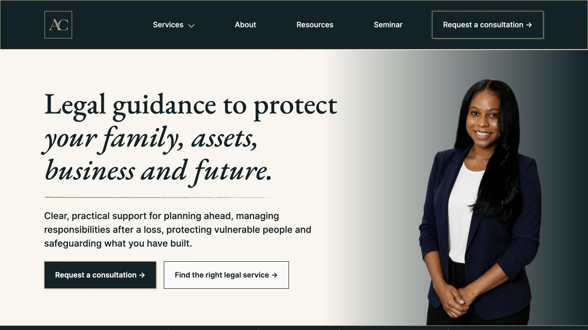

AC Law: a clearer route to legal help
Understanding Amber’s business goals broadened the brief beyond probate.
Amber needed her firm’s first website to establish credibility and invite enquiries. As I understood her business goals and services, the brief broadened beyond probate. My role ran from research and content structure through design, implementation and launch.


Initial probate focus
Probate help and understanding the process
Broader service coverage
- Estate planning
- Probate & trusts
- Guardianships
- Business & trademarks
- Marital agreements
Case-study scope map, based on the original architecture and shipped service coverage.
The early architecture centred on probate help, process guidance and routes to learn about Amber or make contact. It records the starting focus, rather than the final service structure.
The wider remit changed what the website needed to cover. I carried the priorities of recognisable starting points and clear contact expectations into that broader service offer.
Inspect the change in scope
From a probate structure to broader coverage
Home
- Probate Help
- How Probate Works
- About Amber
- Speaking
- Resources / FAQs
- Contact
I carried out research and synthesis, information architecture, content structure, visual and interaction design, implementation and launch, working with Amber on copy and design.
The broader business understanding explains the change in scope. The probate research remains one input; it does not validate the needs of every service audience.
Inspect the original architecture in FigmaMy synthesis focused on relevance, responsibility and contact.
I used planned interview questions and prompts, then synthesised the research into personas, flows and design priorities. The probate work brought uncertainty about taking the next step into focus.
Daniel: first-time executor
- Goal
- Administer the estate correctly and avoid exposing the family to unnecessary risk.
- Uncertainty
- What needs to happen, in what order, and what could go wrong?
Research persona, summarised for this case study. Daniel represents a set of needs, not an individual interview participant.
Recognising a situation
Start with the situation, then explain the legal detail.
- Help visitors recognise what applies to them.
- Clarify immediate responsibilities and a safe next step.
My synthesis, summarised for this case study.
Knowing where responsibility ends
Make trust practical. Explain risk and responsibility.
- Clarify the client’s role and Amber’s role.
- Set expectations for communication and service delivery.
My synthesis, summarised for this case study.
Understanding what contact involves
Explain the first conversation before asking for contact.
- Make the commitment clear.
- Explain what will happen after an enquiry.
My synthesis, summarised for this case study.
The research informed these priorities; their implications still needed testing as the brief expanded.
Read the reasoning and sources
Orientation: the reasoning behind the priority
Evidence and assumptions in the synthesis
- Visitors may arrive without understanding probate terminology.
- Fear of making a mistake may delay action or prompt repeated reassurance.
- Unclear services can make it harder to identify a useful next step.
Needs represented by Daniel
- See the overall process and the next immediate step.
- Understand which responsibilities belong to the client and the lawyer.
- Know what to expect about cost, timing and communication.
These are edited summaries of project research artefacts. The boards combine evidence and assumptions and refer to a discovery report not reviewed for this case study. Participant count and original interview records remain unverified here.
Risk and responsibility: the reasoning behind the priority
Evidence and assumptions in the synthesis
- The synthesis identified anxiety about acting incorrectly or overlooking a responsibility.
- Broad warnings may add anxiety unless they explain what to do next.
- Trust depends partly on understanding Amber’s role and the experience of working with her.
Needs represented by Daniel
- See the overall process and the next immediate step.
- Understand which responsibilities belong to the client and the lawyer.
- Know what to expect about cost, timing and communication.
These are edited summaries of project research artefacts. The boards combine evidence and assumptions and refer to a discovery report not reviewed for this case study. Participant count and original interview records remain unverified here.
Contact expectations: the reasoning behind the priority
Evidence and assumptions in the synthesis
- Visitors may hesitate when they cannot tell what contact would involve.
- A contact button does not explain the commitment or the purpose of the first conversation.
- Unclear next steps and silence after an enquiry may reinforce uncertainty.
Needs represented by Daniel
- See the overall process and the next immediate step.
- Understand which responsibilities belong to the client and the lawyer.
- Know what to expect about cost, timing and communication.
These are edited summaries of project research artefacts. The boards combine evidence and assumptions and refer to a discovery report not reviewed for this case study. Participant count and original interview records remain unverified here.
I designed routes for people who knew what they needed, and those who didn’t.
I used everyday situations as routes into the services and kept an option for people who were unsure. Before contact, I made the consultation terms and next steps explicit.
The route I designed for
- Recognise my situation
- Find relevant help
- Understand contact
Start with an everyday need
- Entry point
- Deal with an estate after a loss
I used “Deal with an estate after a loss” as a route into probate and trust services. The intention was to make the offer recognisable before the visitor chose a legal category.
The route I designed for
- Recognise my situation
- Not sure? Find a way forward
- Understand contact
Keep an option for uncertainty
- Alternative entry
- Not sure where to start?
I included a “Not sure where to start?” route alongside the named situations, so the service choice was not the only way forward.
The route I designed for
- Recognise my situation
- Find relevant help
- Know what happens next
Explain cost and commitment
- Before the form
- No charge. No obligation.
Before the form, I stated the first consultation’s cost and obligation. The shipped page also explains that submitting an enquiry does not create an attorney-client relationship.
These connections show my design reasoning. The flow began with a probate focus; the website’s scope later broadened. Effects on trust and comprehension still need testing.
Inspect the flow and design response
From the proposed route to the design
The probate-focused flow begins by asking whether the website feels relevant to the visitor’s situation. I carried that emphasis on recognition into the broader service routes.
- Arrive on the homepage
- Check whether the firm seems relevant
- Explore a service route
Everyday situation first
The card names a situation rather than requiring the visitor to start with “probate”. This is a design intention, not a measured comprehension result.
The source synthesis combines evidence and assumptions. Intended effects on trust and comprehension remain untested.
From the proposed route to the design
Rachel’s designed flow includes an uncertain branch to “Do I need probate?” guidance. It also provides a route to ask whether Amber can help. These proposed paths informed the design; they are not a recording of the final website.
Unsure whether probate applies
- Find probate guidance
- Ask whether Amber can help
An explicit unsure route
The final service structure retains an option for visitors who cannot yet choose a service. The original flow also proposed guidance that is not identical to the shipped route.
The source synthesis combines evidence and assumptions. Intended effects on trust and comprehension remain untested.
From the proposed route to the design
The contact end of the project flow asks visitors to review consultation expectations and decide whether the next step is clear. That concern is reflected in the consultation information before the form.
- Review contact options
- Understand consultation expectations
- Choose the next step
Terms before the form
The consultation prototype states “No charge” and “No obligation”. The shipped page carries those terms too. This does not establish that visitors understood them.
The source synthesis combines evidence and assumptions. Intended effects on trust and comprehension remain untested.
I reduced the service cards’ visual weight so they didn’t dominate the page.
Client feedback and informal feedback from other designers informed the change. I wanted the page to suggest calm authority and trustworthiness, with the service cards playing a quieter part in the overall composition.
Keep the starting point simple
- Earlier exploration
- A legal category, description and separate button were visible together.
- Shipped card
- The everyday situation stays on the front. Hover or keyboard focus reveals the description and action.
The supporting information is still available, while the front of the card carries less visual weight.
Read the feedback and trade-off
Quieter presentation, with detail on demand
- Earlier exploration
Category, situation, description and button - Revised front
Situation-led entry point - On hover or focus
Description and action
I simplified the service section in response to client feedback and informal feedback from other designers. The intention was to stop it dominating the page and support a sense of calm authority and trustworthiness.
The remaining question is whether people can identify the relevant service and discover its supporting information, including on touch screens. This needs usability testing; the feedback does not establish improved trust or comprehension.
I carried the design through to launch, with usability testing still to come.
I directed AI tools during implementation and carried the site through to launch, working with Amber on copy and design. The live website brings the broader services, information about Amber and the enquiry route together.
Shipped
A live client website, from research-informed structure to implementation and launch.
Explore the live website ↗Still to test
Planned unmoderated tasks and a group discussion have not happened. No usability results or business-impact measures are available.
First consultation
- Cost
- No charge
- Commitment
- No obligation
Cost and commitment before the form
The consultation page states “No charge” and “No obligation” before the form. Submitting an enquiry does not create an attorney-client relationship.
Still to test
Do people understand the cost, obligation and purpose of the first contact?
- Amber reviews the enquiry
Confirm whether the firm can help - Agree the next steps
If Amber can help, agree how to proceed
What follows an enquiry
The homepage explains that Amber reviews the enquiry to confirm whether the firm can help, before agreeing how to proceed.
Still to test
Can people explain what happens after they enquire?
See what still needs validation
Proposed task: understand contact
Proposed task
Before sending an enquiry, what would you expect the first consultation to cost, and what would you be committing to?
What to look for
Ask people to explain the terms in their own words rather than just recognise the wording.
Proposed task: know the next steps
Proposed task
You have sent a short enquiry. What would you expect Amber to do next, and what would happen if she can help?
What to look for
Listen for the distinction between an enquiry, a review of whether the firm can help and agreeing how to proceed.
Proposed study prompts for this case study, not completed tests or confirmed historical study tasks. Captures show the website on 30 October 2026.